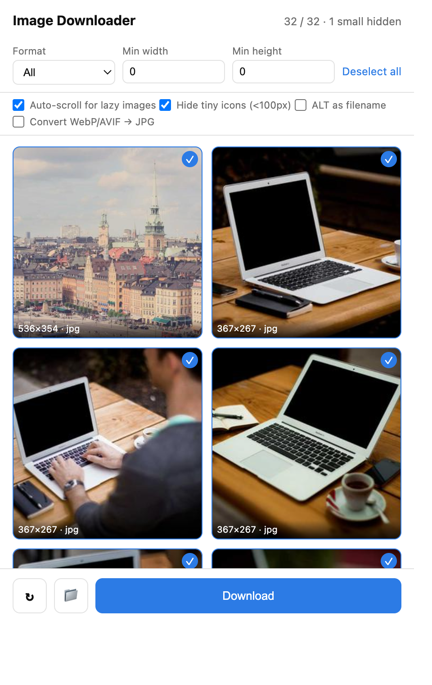
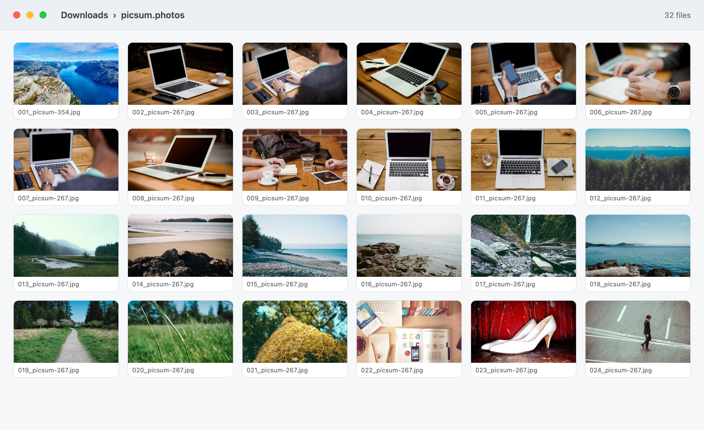

A bulk image downloader for Chrome that finds what the page really loaded — including lazy-loaded pictures and CSS background images — then saves the ones you pick into a folder named after the site.
Free · No account · No ads · No tracking

Three things break most image downloaders. This one was built around them.
Pages publish several versions of one photo and show the smallest. The scanner reads the whole srcset list and every source tag, so the larger file is the one you get.
Long galleries load as you scroll. Auto-scroll walks the page to the bottom first, waits for images to render, scrolls back, and only then scans.
Banners and tiles are often painted through CSS, invisible to tag-only scanners. Those are collected too, along with images inside embedded frames.
On any page. The grid builds itself in a couple of seconds, sorted largest first.
Everything is pre-selected. Filter by format, minimum width and minimum height.
Files land in a folder named after the site, numbered in order, ready to use.

JPG, PNG, WebP, GIF, SVG and AVIF. Keep only what your editor accepts, or convert WebP and AVIF to JPG while saving.
Minimum width and height in pixels, so a large batch stays dimensionally consistent.
Icons under 150px, avatars, logos, sprite sheets, tracking pixels, spinners and emoji are hidden by default.
The extension is being published to the Chrome Web Store. The button below will point at the listing as soon as review is finished.
No. There is no server and no analytics. Image URLs live in memory while the popup is open, and your settings stay in local browser storage. See the privacy policy.
It takes the largest version the page publishes in srcset or source. Where a page only ever offers a preview, the preview is all that exists.
Broken and hotlink-protected files are dropped automatically, and the tiny-icon filter hides small graphics. Turn that filter off to list them again.
It saves what the page hands to the browser. It does not reach into protected platform APIs, and it does not bypass paywalls, DRM or watermarks.
That is a Chrome setting, not the extension. Turn off Ask where to save each file in Chrome Settings → Downloads and batches will save silently.